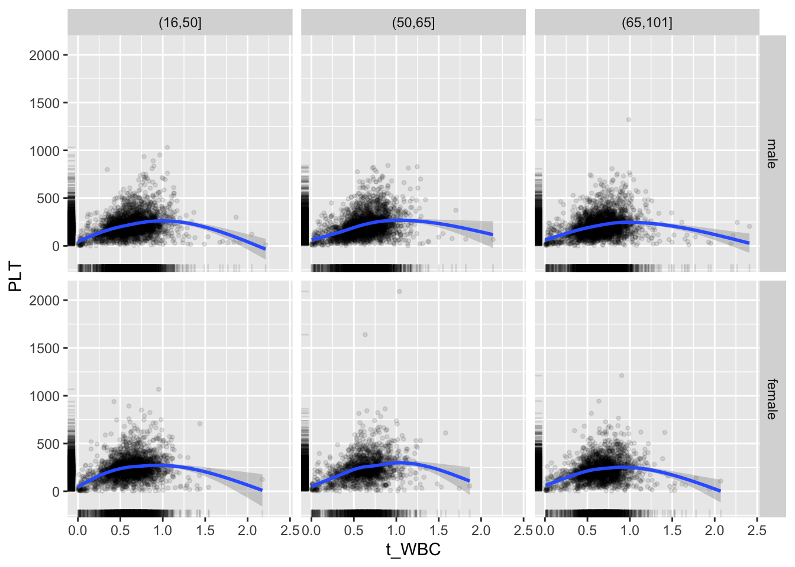
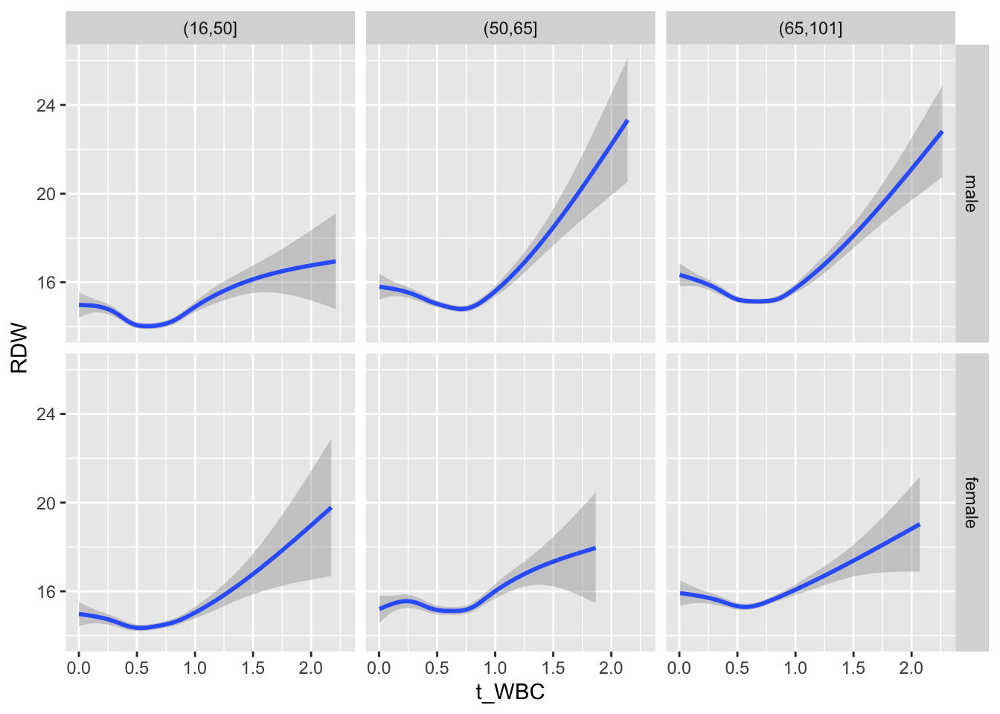
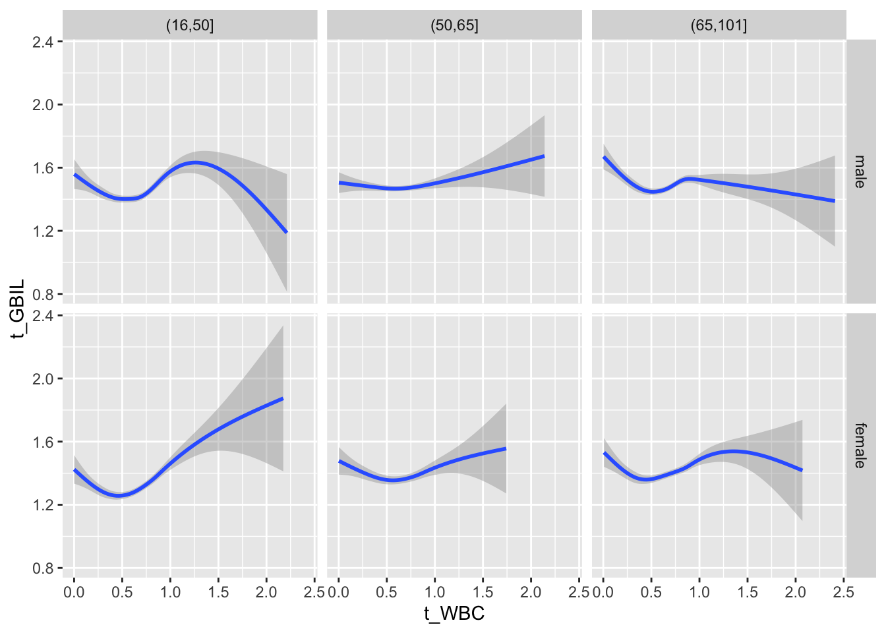
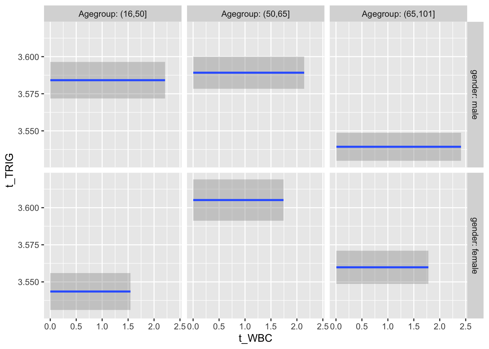

8 Multivariate distributions
8.1 Overview
8.1.1 Variable correlation
Compute correlations between the independent variables or their suggested transformations.
Show the code
variables <- unique(c(bact_transformed$demog_vars,
bact_transformed$structural_vars,
bact_transformed$key_predictors,
bact_transformed$leuko_related_vars,
bact_transformed$leuko_ratio_vars,
bact_transformed$kidney_related_vars,
bact_transformed$acute_related_vars,
bact_transformed$remaining_vars))
corrp <- c_bact %>%
dplyr::select(all_of(variables)) %>%
cor(use="pairwise.complete.obs", method="pearson")
corrs <- c_bact %>%
dplyr::select(all_of(variables)) %>%
cor(use="pairwise.complete.obs", method="spearman")
# differences of pearson and spearman correlations to check for outliers
corrd <- corrp-corrsNext, we depict the correlation coefficient in a quadratic heat map:
Show the code
ggcorrplot(corrp, tl.cex=5, tl.srt=90)Explore if there are clusters of variables. Such clusters may give rise to define groups of variables for which a summary or only a representative may be considered in modeling:
Show the code
vc_bact<-Hmisc::varclus(as.matrix(c_bact[,variables]))
plot(vc_bact, cex=0.7)Some of the clusters that pop up here are related to width/volume of blood cells (MPV, PDW), red blood cells (RBC, HGB, HCT; MCV, MCH), and some further ‘known’ associations such as that between CREA and eGFR (which follows from the construction of eGFR), and between ASAT and ALAT, between AMY and PAMY or between TP and ALB).
In the following scatterplots we have a look at those associations:
Show the code
ggplot(c_bact, aes(MPV, PDW))+geom_point(alpha = alpha_value, shape = 20) + geom_smooth()`geom_smooth()` using method = 'gam' and formula 'y ~ s(x, bs = "cs")'Warning: Removed 1102 rows containing non-finite values (stat_smooth).Warning: Removed 1102 rows containing missing values (geom_point).Show the code
ggplot(c_bact, aes(RBC, HGB))+geom_point(alpha = alpha_value, shape = 20) + geom_smooth()`geom_smooth()` using method = 'gam' and formula 'y ~ s(x, bs = "cs")'Warning: Removed 461 rows containing non-finite values (stat_smooth).Warning: Removed 461 rows containing missing values (geom_point).Show the code
ggplot(c_bact, aes(RBC, HCT))+geom_point(alpha = alpha_value, shape = 20) + geom_smooth()`geom_smooth()` using method = 'gam' and formula 'y ~ s(x, bs = "cs")'Warning: Removed 461 rows containing non-finite values (stat_smooth).
Removed 461 rows containing missing values (geom_point).Show the code
ggplot(c_bact, aes(HGB, HCT))+geom_point(alpha = alpha_value, shape = 20) + geom_smooth()`geom_smooth()` using method = 'gam' and formula 'y ~ s(x, bs = "cs")'Warning: Removed 42 rows containing non-finite values (stat_smooth).Warning: Removed 42 rows containing missing values (geom_point).Show the code
ggplot(c_bact, aes(MCV, MCH))+geom_point(alpha = alpha_value, shape = 20) + geom_smooth()`geom_smooth()` using method = 'gam' and formula 'y ~ s(x, bs = "cs")'Warning: Removed 42 rows containing non-finite values (stat_smooth).
Removed 42 rows containing missing values (geom_point).Show the code
#ggplot(c_bact, aes(t_KREA, eGFR))+geom_point(alpha = alpha_value, shape = 20) + geom_smooth()
ggplot(c_bact, aes(t_ASAT, t_ALAT))+geom_point(alpha = alpha_value, shape = 20) + geom_smooth()Don't know how to automatically pick scale for object of type labelled/integer. Defaulting to continuous.Don't know how to automatically pick scale for object of type labelled/integer. Defaulting to continuous.`geom_smooth()` using method = 'gam' and formula 'y ~ s(x, bs = "cs")'Warning: Removed 1195 rows containing non-finite values (stat_smooth).Warning: Removed 1195 rows containing missing values (geom_point).Show the code
ggplot(c_bact, aes(t_AMY, t_PAMY))+geom_point(alpha = alpha_value, shape = 20) + geom_smooth()Don't know how to automatically pick scale for object of type labelled/integer. Defaulting to continuous.Don't know how to automatically pick scale for object of type labelled/integer. Defaulting to continuous.`geom_smooth()` using method = 'gam' and formula 'y ~ s(x, bs = "cs")'Warning: Removed 7182 rows containing non-finite values (stat_smooth).Warning: Removed 7182 rows containing missing values (geom_point).Show the code
ggplot(c_bact, aes(t_WBC, t_NEU))+geom_point(alpha = alpha_value, shape = 20) + geom_smooth()`geom_smooth()` using method = 'gam' and formula 'y ~ s(x, bs = "cs")'Warning: Removed 728 rows containing non-finite values (stat_smooth).Warning: Removed 728 rows containing missing values (geom_point).Create scatterplots for pairs of variables with a large distance between Spearman and Pearson correlations (could be an indication of nonlinear association):
Show the code
for(j in 1:(length(variables)-1)){
for(jj in (j+1):(length(variables))){
if(abs(corrd[j, jj])>0.1) print(ggplot(data=c_bact, mapping=aes(x=.data[[variables[j]]],y=.data[[variables[jj]]]))+ geom_point(alpha = alpha_value)+geom_smooth() +
theme_minimal())
}
}`geom_smooth()` using method = 'gam' and formula 'y ~ s(x, bs = "cs")'Warning: Removed 174 rows containing non-finite values (stat_smooth).Warning: Removed 174 rows containing missing values (geom_point).`geom_smooth()` using method = 'gam' and formula 'y ~ s(x, bs = "cs")'Warning: Removed 1279 rows containing non-finite values (stat_smooth).Warning: Removed 1279 rows containing missing values (geom_point).`geom_smooth()` using method = 'gam' and formula 'y ~ s(x, bs = "cs")'Warning: Removed 732 rows containing non-finite values (stat_smooth).Warning: Removed 732 rows containing missing values (geom_point).
`geom_smooth()` using method = 'gam' and formula 'y ~ s(x, bs = "cs")'Warning: Removed 732 rows containing non-finite values (stat_smooth).
Removed 732 rows containing missing values (geom_point).`geom_smooth()` using method = 'gam' and formula 'y ~ s(x, bs = "cs")'Warning: Removed 732 rows containing non-finite values (stat_smooth).
Removed 732 rows containing missing values (geom_point).`geom_smooth()` using method = 'gam' and formula 'y ~ s(x, bs = "cs")'Warning: Removed 732 rows containing non-finite values (stat_smooth).
Removed 732 rows containing missing values (geom_point).`geom_smooth()` using method = 'gam' and formula 'y ~ s(x, bs = "cs")'Warning: Removed 732 rows containing non-finite values (stat_smooth).
Removed 732 rows containing missing values (geom_point).`geom_smooth()` using method = 'gam' and formula 'y ~ s(x, bs = "cs")'Warning: Removed 732 rows containing non-finite values (stat_smooth).
Removed 732 rows containing missing values (geom_point).Don't know how to automatically pick scale for object of type labelled/integer. Defaulting to continuous.
`geom_smooth()` using method = 'gam' and formula 'y ~ s(x, bs = "cs")'Warning: Removed 1580 rows containing non-finite values (stat_smooth).Warning: Removed 1580 rows containing missing values (geom_point).8.1.2 Distribution of age by sex
Distribution of age by sex
8.1.3 Distribution of leukocytes by age, coloured by sex
Show the code
c_bact$gender=factor(c_bact$SEX, levels=c(1,2), labels=c("male","female"))
#c_bact %>% ggplot(data=c_bact, mapping=aes(x=Alter, y=t_WBC, color=gender)) + geom_point(shape = 20) + geom_smooth()8.1.4 Plot all variables vs. WBC in age/sex groups
Show the code
c_bact$Agegroup <- factor(cut(c_bact$AGE, c(min(c_bact$AGE), 50, 65, max(c_bact$AGE))))
table(c_bact$gender,c_bact$Agegroup)
(16,50] (50,65] (65,101]
male 2900 2671 2962
female 2460 1579 2114Show the code
for(j in 4:length(variables)){
p1 <-
c_bact %>%
filter(!is.na(Agegroup)) %>%
ggplot(c_bact, mapping=aes(x=t_WBC,y=.data[[variables[j]]])) +
geom_point(alpha = alpha_value, shape = 20) +
geom_smooth() +
geom_rug(alpha = alpha_value) +
facet_grid(gender ~ Agegroup)
print(p1)
}`geom_smooth()` using method = 'gam' and formula 'y ~ s(x, bs = "cs")'Warning: Removed 634 rows containing non-finite values (stat_smooth).Warning: Removed 634 rows containing missing values (geom_point).`geom_smooth()` using method = 'gam' and formula 'y ~ s(x, bs = "cs")'Warning: Removed 620 rows containing non-finite values (stat_smooth).Warning: Removed 620 rows containing missing values (geom_point).`geom_smooth()` using method = 'gam' and formula 'y ~ s(x, bs = "cs")'Warning: Removed 728 rows containing non-finite values (stat_smooth).Warning: Removed 728 rows containing missing values (geom_point).Don't know how to automatically pick scale for object of type labelled/integer. Defaulting to continuous.
`geom_smooth()` using method = 'gam' and formula 'y ~ s(x, bs = "cs")'Warning: Removed 462 rows containing non-finite values (stat_smooth).Warning: Removed 462 rows containing missing values (geom_point).
`geom_smooth()` using method = 'gam' and formula 'y ~ s(x, bs = "cs")'Warning: Removed 552 rows containing non-finite values (stat_smooth).Warning: Removed 552 rows containing missing values (geom_point).`geom_smooth()` using method = 'gam' and formula 'y ~ s(x, bs = "cs")'Warning: Removed 557 rows containing non-finite values (stat_smooth).Warning: Removed 557 rows containing missing values (geom_point).`geom_smooth()` using method = 'gam' and formula 'y ~ s(x, bs = "cs")'Warning: Removed 666 rows containing non-finite values (stat_smooth).Warning: Removed 666 rows containing missing values (geom_point).
`geom_smooth()` using method = 'gam' and formula 'y ~ s(x, bs = "cs")'Warning: Removed 648 rows containing non-finite values (stat_smooth).Warning: Removed 648 rows containing missing values (geom_point).`geom_smooth()` using method = 'gam' and formula 'y ~ s(x, bs = "cs")'Warning: Removed 732 rows containing non-finite values (stat_smooth).Warning: Removed 732 rows containing missing values (geom_point).`geom_smooth()` using method = 'gam' and formula 'y ~ s(x, bs = "cs")'Warning: Removed 732 rows containing non-finite values (stat_smooth).
Removed 732 rows containing missing values (geom_point).
`geom_smooth()` using method = 'gam' and formula 'y ~ s(x, bs = "cs")'Warning: Removed 732 rows containing non-finite values (stat_smooth).
Removed 732 rows containing missing values (geom_point).`geom_smooth()` using method = 'gam' and formula 'y ~ s(x, bs = "cs")'Warning: Removed 732 rows containing non-finite values (stat_smooth).
Removed 732 rows containing missing values (geom_point).`geom_smooth()` using method = 'gam' and formula 'y ~ s(x, bs = "cs")'Warning: Removed 732 rows containing non-finite values (stat_smooth).
Removed 732 rows containing missing values (geom_point).`geom_smooth()` using method = 'gam' and formula 'y ~ s(x, bs = "cs")'Warning: Removed 2428 rows containing non-finite values (stat_smooth).Warning: Removed 2428 rows containing missing values (geom_point).`geom_smooth()` using method = 'gam' and formula 'y ~ s(x, bs = "cs")'Warning: Removed 620 rows containing non-finite values (stat_smooth).Warning: Removed 620 rows containing missing values (geom_point).`geom_smooth()` using method = 'gam' and formula 'y ~ s(x, bs = "cs")'Warning: Removed 635 rows containing non-finite values (stat_smooth).Warning: Removed 635 rows containing missing values (geom_point).Don't know how to automatically pick scale for object of type labelled/integer. Defaulting to continuous.
`geom_smooth()` using method = 'gam' and formula 'y ~ s(x, bs = "cs")'Warning: Removed 2990 rows containing non-finite values (stat_smooth).Warning: Removed 2990 rows containing missing values (geom_point).`geom_smooth()` using method = 'gam' and formula 'y ~ s(x, bs = "cs")'Warning: Removed 614 rows containing non-finite values (stat_smooth).Warning: Removed 614 rows containing missing values (geom_point).`geom_smooth()` using method = 'gam' and formula 'y ~ s(x, bs = "cs")'Warning: Removed 1610 rows containing non-finite values (stat_smooth).Warning: Removed 1610 rows containing missing values (geom_point).`geom_smooth()` using method = 'gam' and formula 'y ~ s(x, bs = "cs")'Warning: Removed 1446 rows containing non-finite values (stat_smooth).Warning: Removed 1446 rows containing missing values (geom_point).`geom_smooth()` using method = 'gam' and formula 'y ~ s(x, bs = "cs")'Warning: Removed 1718 rows containing non-finite values (stat_smooth).Warning: Removed 1718 rows containing missing values (geom_point).`geom_smooth()` using method = 'gam' and formula 'y ~ s(x, bs = "cs")'Warning: Removed 463 rows containing non-finite values (stat_smooth).Warning: Removed 463 rows containing missing values (geom_point).`geom_smooth()` using method = 'gam' and formula 'y ~ s(x, bs = "cs")'Warning: Removed 462 rows containing non-finite values (stat_smooth).Warning: Removed 462 rows containing missing values (geom_point).`geom_smooth()` using method = 'gam' and formula 'y ~ s(x, bs = "cs")'Warning: Removed 463 rows containing non-finite values (stat_smooth).Warning: Removed 463 rows containing missing values (geom_point).`geom_smooth()` using method = 'gam' and formula 'y ~ s(x, bs = "cs")'Warning: Removed 463 rows containing non-finite values (stat_smooth).
Removed 463 rows containing missing values (geom_point).`geom_smooth()` using method = 'gam' and formula 'y ~ s(x, bs = "cs")'Warning: Removed 463 rows containing non-finite values (stat_smooth).
Removed 463 rows containing missing values (geom_point).`geom_smooth()` using method = 'gam' and formula 'y ~ s(x, bs = "cs")'Warning: Removed 476 rows containing non-finite values (stat_smooth).Warning: Removed 476 rows containing missing values (geom_point).`geom_smooth()` using method = 'gam' and formula 'y ~ s(x, bs = "cs")'Warning: Removed 1104 rows containing non-finite values (stat_smooth).Warning: Removed 1104 rows containing missing values (geom_point).Don't know how to automatically pick scale for object of type labelled/integer. Defaulting to continuous.
`geom_smooth()` using method = 'gam' and formula 'y ~ s(x, bs = "cs")'Warning: Removed 2887 rows containing non-finite values (stat_smooth).Warning: Removed 2887 rows containing missing values (geom_point).`geom_smooth()` using method = 'gam' and formula 'y ~ s(x, bs = "cs")'Warning: Removed 2955 rows containing non-finite values (stat_smooth).Warning: Removed 2955 rows containing missing values (geom_point).Don't know how to automatically pick scale for object of type labelled/integer. Defaulting to continuous.
`geom_smooth()` using method = 'gam' and formula 'y ~ s(x, bs = "cs")'Warning: Removed 1724 rows containing non-finite values (stat_smooth).Warning: Removed 1724 rows containing missing values (geom_point).`geom_smooth()` using method = 'gam' and formula 'y ~ s(x, bs = "cs")'Warning: Removed 1733 rows containing non-finite values (stat_smooth).Warning: Removed 1733 rows containing missing values (geom_point).
`geom_smooth()` using method = 'gam' and formula 'y ~ s(x, bs = "cs")'Warning: Removed 1696 rows containing non-finite values (stat_smooth).Warning: Removed 1696 rows containing missing values (geom_point).`geom_smooth()` using method = 'gam' and formula 'y ~ s(x, bs = "cs")'Warning: Removed 2313 rows containing non-finite values (stat_smooth).Warning: Removed 2313 rows containing missing values (geom_point).`geom_smooth()` using method = 'gam' and formula 'y ~ s(x, bs = "cs")'Warning: Removed 3476 rows containing non-finite values (stat_smooth).Warning: Removed 3476 rows containing missing values (geom_point).
`geom_smooth()` using method = 'gam' and formula 'y ~ s(x, bs = "cs")'Warning: Removed 1892 rows containing non-finite values (stat_smooth).Warning: Removed 1892 rows containing missing values (geom_point).`geom_smooth()` using method = 'gam' and formula 'y ~ s(x, bs = "cs")'Warning: Removed 2008 rows containing non-finite values (stat_smooth).Warning: Removed 2008 rows containing missing values (geom_point).`geom_smooth()` using method = 'gam' and formula 'y ~ s(x, bs = "cs")'Warning: Removed 2108 rows containing non-finite values (stat_smooth).Warning: Removed 2108 rows containing missing values (geom_point).`geom_smooth()` using method = 'gam' and formula 'y ~ s(x, bs = "cs")'Warning: Removed 4323 rows containing non-finite values (stat_smooth).Warning: Removed 4323 rows containing missing values (geom_point).`geom_smooth()` using method = 'gam' and formula 'y ~ s(x, bs = "cs")'Warning: Removed 7410 rows containing non-finite values (stat_smooth).Warning: Removed 7410 rows containing missing values (geom_point).`geom_smooth()` using method = 'gam' and formula 'y ~ s(x, bs = "cs")'Warning: Removed 4108 rows containing non-finite values (stat_smooth).Warning: Removed 4108 rows containing missing values (geom_point).
`geom_smooth()` using method = 'gam' and formula 'y ~ s(x, bs = "cs")'Warning: Removed 2865 rows containing non-finite values (stat_smooth).Warning: Removed 2865 rows containing missing values (geom_point).`geom_smooth()` using method = 'gam' and formula 'y ~ s(x, bs = "cs")'Warning: Removed 1851 rows containing non-finite values (stat_smooth).Warning: Removed 1851 rows containing missing values (geom_point).`geom_smooth()` using method = 'gam' and formula 'y ~ s(x, bs = "cs")'Warning: Removed 2149 rows containing non-finite values (stat_smooth).Warning: Removed 2149 rows containing missing values (geom_point).`geom_smooth()` using method = 'gam' and formula 'y ~ s(x, bs = "cs")'Warning: Removed 2514 rows containing non-finite values (stat_smooth).Warning: Removed 2514 rows containing missing values (geom_point).`geom_smooth()` using method = 'gam' and formula 'y ~ s(x, bs = "cs")'Warning: Removed 4572 rows containing non-finite values (stat_smooth).Warning: Removed 4572 rows containing missing values (geom_point).`geom_smooth()` using method = 'gam' and formula 'y ~ s(x, bs = "cs")'Warning: Removed 5440 rows containing non-finite values (stat_smooth).Warning: Removed 5440 rows containing missing values (geom_point).Don't know how to automatically pick scale for object of type labelled/integer. Defaulting to continuous.
`geom_smooth()` using method = 'gam' and formula 'y ~ s(x, bs = "cs")'Warning: Removed 5417 rows containing non-finite values (stat_smooth).Warning: Removed 5417 rows containing missing values (geom_point).`geom_smooth()` using method = 'gam' and formula 'y ~ s(x, bs = "cs")'Warning: Removed 1104 rows containing non-finite values (stat_smooth).Warning: Removed 1104 rows containing missing values (geom_point).`geom_smooth()` using method = 'gam' and formula 'y ~ s(x, bs = "cs")'Warning: Removed 463 rows containing non-finite values (stat_smooth).Warning: Removed 463 rows containing missing values (geom_point).
Show the code
#+
# theme_minimal()8.1.5 Plot all variables vs. WBC in age/sex groups: loess curves only
Show the code
for(j in 4:length(variables)){
p1 <-
c_bact %>%
filter(!is.na(Agegroup)) %>%
ggplot(c_bact, mapping=aes(x=t_WBC,y=.data[[variables[j]]])) +
# geom_point(alpha = alpha_value) +
geom_smooth() +
# geom_rug() +
facet_grid(gender ~ Agegroup)
print(p1)
}`geom_smooth()` using method = 'gam' and formula 'y ~ s(x, bs = "cs")'Warning: Removed 634 rows containing non-finite values (stat_smooth).`geom_smooth()` using method = 'gam' and formula 'y ~ s(x, bs = "cs")'Warning: Removed 620 rows containing non-finite values (stat_smooth).`geom_smooth()` using method = 'gam' and formula 'y ~ s(x, bs = "cs")'Warning: Removed 728 rows containing non-finite values (stat_smooth).
Don't know how to automatically pick scale for object of type labelled/integer. Defaulting to continuous.
`geom_smooth()` using method = 'gam' and formula 'y ~ s(x, bs = "cs")'Warning: Removed 462 rows containing non-finite values (stat_smooth).`geom_smooth()` using method = 'gam' and formula 'y ~ s(x, bs = "cs")'Warning: Removed 552 rows containing non-finite values (stat_smooth).`geom_smooth()` using method = 'gam' and formula 'y ~ s(x, bs = "cs")'Warning: Removed 557 rows containing non-finite values (stat_smooth).`geom_smooth()` using method = 'gam' and formula 'y ~ s(x, bs = "cs")'Warning: Removed 666 rows containing non-finite values (stat_smooth).`geom_smooth()` using method = 'gam' and formula 'y ~ s(x, bs = "cs")'Warning: Removed 648 rows containing non-finite values (stat_smooth).`geom_smooth()` using method = 'gam' and formula 'y ~ s(x, bs = "cs")'Warning: Removed 732 rows containing non-finite values (stat_smooth).`geom_smooth()` using method = 'gam' and formula 'y ~ s(x, bs = "cs")'Warning: Removed 732 rows containing non-finite values (stat_smooth).`geom_smooth()` using method = 'gam' and formula 'y ~ s(x, bs = "cs")'Warning: Removed 732 rows containing non-finite values (stat_smooth).`geom_smooth()` using method = 'gam' and formula 'y ~ s(x, bs = "cs")'Warning: Removed 732 rows containing non-finite values (stat_smooth).
`geom_smooth()` using method = 'gam' and formula 'y ~ s(x, bs = "cs")'Warning: Removed 732 rows containing non-finite values (stat_smooth).`geom_smooth()` using method = 'gam' and formula 'y ~ s(x, bs = "cs")'Warning: Removed 2428 rows containing non-finite values (stat_smooth).`geom_smooth()` using method = 'gam' and formula 'y ~ s(x, bs = "cs")'Warning: Removed 620 rows containing non-finite values (stat_smooth).`geom_smooth()` using method = 'gam' and formula 'y ~ s(x, bs = "cs")'Warning: Removed 635 rows containing non-finite values (stat_smooth).Don't know how to automatically pick scale for object of type labelled/integer. Defaulting to continuous.
`geom_smooth()` using method = 'gam' and formula 'y ~ s(x, bs = "cs")'Warning: Removed 2990 rows containing non-finite values (stat_smooth).`geom_smooth()` using method = 'gam' and formula 'y ~ s(x, bs = "cs")'Warning: Removed 614 rows containing non-finite values (stat_smooth).`geom_smooth()` using method = 'gam' and formula 'y ~ s(x, bs = "cs")'Warning: Removed 1610 rows containing non-finite values (stat_smooth).
`geom_smooth()` using method = 'gam' and formula 'y ~ s(x, bs = "cs")'Warning: Removed 1446 rows containing non-finite values (stat_smooth).`geom_smooth()` using method = 'gam' and formula 'y ~ s(x, bs = "cs")'Warning: Removed 1718 rows containing non-finite values (stat_smooth).`geom_smooth()` using method = 'gam' and formula 'y ~ s(x, bs = "cs")'Warning: Removed 463 rows containing non-finite values (stat_smooth).`geom_smooth()` using method = 'gam' and formula 'y ~ s(x, bs = "cs")'Warning: Removed 462 rows containing non-finite values (stat_smooth).`geom_smooth()` using method = 'gam' and formula 'y ~ s(x, bs = "cs")'Warning: Removed 463 rows containing non-finite values (stat_smooth).`geom_smooth()` using method = 'gam' and formula 'y ~ s(x, bs = "cs")'Warning: Removed 463 rows containing non-finite values (stat_smooth).`geom_smooth()` using method = 'gam' and formula 'y ~ s(x, bs = "cs")'Warning: Removed 463 rows containing non-finite values (stat_smooth).`geom_smooth()` using method = 'gam' and formula 'y ~ s(x, bs = "cs")'Warning: Removed 476 rows containing non-finite values (stat_smooth).
`geom_smooth()` using method = 'gam' and formula 'y ~ s(x, bs = "cs")'Warning: Removed 1104 rows containing non-finite values (stat_smooth).Don't know how to automatically pick scale for object of type labelled/integer. Defaulting to continuous.
`geom_smooth()` using method = 'gam' and formula 'y ~ s(x, bs = "cs")'Warning: Removed 2887 rows containing non-finite values (stat_smooth).`geom_smooth()` using method = 'gam' and formula 'y ~ s(x, bs = "cs")'Warning: Removed 2955 rows containing non-finite values (stat_smooth).Don't know how to automatically pick scale for object of type labelled/integer. Defaulting to continuous.
`geom_smooth()` using method = 'gam' and formula 'y ~ s(x, bs = "cs")'Warning: Removed 1724 rows containing non-finite values (stat_smooth).`geom_smooth()` using method = 'gam' and formula 'y ~ s(x, bs = "cs")'Warning: Removed 1733 rows containing non-finite values (stat_smooth).`geom_smooth()` using method = 'gam' and formula 'y ~ s(x, bs = "cs")'Warning: Removed 1696 rows containing non-finite values (stat_smooth).`geom_smooth()` using method = 'gam' and formula 'y ~ s(x, bs = "cs")'Warning: Removed 2313 rows containing non-finite values (stat_smooth).`geom_smooth()` using method = 'gam' and formula 'y ~ s(x, bs = "cs")'Warning: Removed 3476 rows containing non-finite values (stat_smooth).`geom_smooth()` using method = 'gam' and formula 'y ~ s(x, bs = "cs")'Warning: Removed 1892 rows containing non-finite values (stat_smooth).
`geom_smooth()` using method = 'gam' and formula 'y ~ s(x, bs = "cs")'Warning: Removed 2008 rows containing non-finite values (stat_smooth).`geom_smooth()` using method = 'gam' and formula 'y ~ s(x, bs = "cs")'Warning: Removed 2108 rows containing non-finite values (stat_smooth).`geom_smooth()` using method = 'gam' and formula 'y ~ s(x, bs = "cs")'Warning: Removed 4323 rows containing non-finite values (stat_smooth).`geom_smooth()` using method = 'gam' and formula 'y ~ s(x, bs = "cs")'Warning: Removed 7410 rows containing non-finite values (stat_smooth).`geom_smooth()` using method = 'gam' and formula 'y ~ s(x, bs = "cs")'Warning: Removed 4108 rows containing non-finite values (stat_smooth).
`geom_smooth()` using method = 'gam' and formula 'y ~ s(x, bs = "cs")'Warning: Removed 2865 rows containing non-finite values (stat_smooth).`geom_smooth()` using method = 'gam' and formula 'y ~ s(x, bs = "cs")'Warning: Removed 1851 rows containing non-finite values (stat_smooth).`geom_smooth()` using method = 'gam' and formula 'y ~ s(x, bs = "cs")'Warning: Removed 2149 rows containing non-finite values (stat_smooth).`geom_smooth()` using method = 'gam' and formula 'y ~ s(x, bs = "cs")'Warning: Removed 2514 rows containing non-finite values (stat_smooth).`geom_smooth()` using method = 'gam' and formula 'y ~ s(x, bs = "cs")'Warning: Removed 4572 rows containing non-finite values (stat_smooth).`geom_smooth()` using method = 'gam' and formula 'y ~ s(x, bs = "cs")'Warning: Removed 5440 rows containing non-finite values (stat_smooth).
Don't know how to automatically pick scale for object of type labelled/integer. Defaulting to continuous.
`geom_smooth()` using method = 'gam' and formula 'y ~ s(x, bs = "cs")'Warning: Removed 5417 rows containing non-finite values (stat_smooth).`geom_smooth()` using method = 'gam' and formula 'y ~ s(x, bs = "cs")'Warning: Removed 1104 rows containing non-finite values (stat_smooth).`geom_smooth()` using method = 'gam' and formula 'y ~ s(x, bs = "cs")'Warning: Removed 463 rows containing non-finite values (stat_smooth).8.1.6 Plot all variables vs. WBC in age/sex groups: loess curves only
Show the code
for(j in 4:length(variables)){
p1 <-
c_bact %>%
filter(!is.na(Agegroup)) %>%
ggplot(c_bact, mapping=aes(x=t_WBC,y=.data[[variables[j]]])) +
# geom_point(alpha = alpha_value) +
geom_smooth() +
# geom_rug() +
facet_grid(gender ~ Agegroup, labeller=label_both)
print(p1) +
theme_minimal()
}`geom_smooth()` using method = 'gam' and formula 'y ~ s(x, bs = "cs")'Warning: Removed 634 rows containing non-finite values (stat_smooth).`geom_smooth()` using method = 'gam' and formula 'y ~ s(x, bs = "cs")'Warning: Removed 620 rows containing non-finite values (stat_smooth).
`geom_smooth()` using method = 'gam' and formula 'y ~ s(x, bs = "cs")'Warning: Removed 728 rows containing non-finite values (stat_smooth).Don't know how to automatically pick scale for object of type labelled/integer. Defaulting to continuous.
`geom_smooth()` using method = 'gam' and formula 'y ~ s(x, bs = "cs")'Warning: Removed 462 rows containing non-finite values (stat_smooth).`geom_smooth()` using method = 'gam' and formula 'y ~ s(x, bs = "cs")'Warning: Removed 552 rows containing non-finite values (stat_smooth).`geom_smooth()` using method = 'gam' and formula 'y ~ s(x, bs = "cs")'Warning: Removed 557 rows containing non-finite values (stat_smooth).`geom_smooth()` using method = 'gam' and formula 'y ~ s(x, bs = "cs")'Warning: Removed 666 rows containing non-finite values (stat_smooth).`geom_smooth()` using method = 'gam' and formula 'y ~ s(x, bs = "cs")'Warning: Removed 648 rows containing non-finite values (stat_smooth).`geom_smooth()` using method = 'gam' and formula 'y ~ s(x, bs = "cs")'Warning: Removed 732 rows containing non-finite values (stat_smooth).`geom_smooth()` using method = 'gam' and formula 'y ~ s(x, bs = "cs")'Warning: Removed 732 rows containing non-finite values (stat_smooth).`geom_smooth()` using method = 'gam' and formula 'y ~ s(x, bs = "cs")'Warning: Removed 732 rows containing non-finite values (stat_smooth).`geom_smooth()` using method = 'gam' and formula 'y ~ s(x, bs = "cs")'Warning: Removed 732 rows containing non-finite values (stat_smooth).`geom_smooth()` using method = 'gam' and formula 'y ~ s(x, bs = "cs")'Warning: Removed 732 rows containing non-finite values (stat_smooth).`geom_smooth()` using method = 'gam' and formula 'y ~ s(x, bs = "cs")'Warning: Removed 2428 rows containing non-finite values (stat_smooth).`geom_smooth()` using method = 'gam' and formula 'y ~ s(x, bs = "cs")'Warning: Removed 620 rows containing non-finite values (stat_smooth).`geom_smooth()` using method = 'gam' and formula 'y ~ s(x, bs = "cs")'Warning: Removed 635 rows containing non-finite values (stat_smooth).Don't know how to automatically pick scale for object of type labelled/integer. Defaulting to continuous.
`geom_smooth()` using method = 'gam' and formula 'y ~ s(x, bs = "cs")'Warning: Removed 2990 rows containing non-finite values (stat_smooth).`geom_smooth()` using method = 'gam' and formula 'y ~ s(x, bs = "cs")'Warning: Removed 614 rows containing non-finite values (stat_smooth).`geom_smooth()` using method = 'gam' and formula 'y ~ s(x, bs = "cs")'Warning: Removed 1610 rows containing non-finite values (stat_smooth).`geom_smooth()` using method = 'gam' and formula 'y ~ s(x, bs = "cs")'Warning: Removed 1446 rows containing non-finite values (stat_smooth).`geom_smooth()` using method = 'gam' and formula 'y ~ s(x, bs = "cs")'Warning: Removed 1718 rows containing non-finite values (stat_smooth).`geom_smooth()` using method = 'gam' and formula 'y ~ s(x, bs = "cs")'Warning: Removed 463 rows containing non-finite values (stat_smooth).`geom_smooth()` using method = 'gam' and formula 'y ~ s(x, bs = "cs")'Warning: Removed 462 rows containing non-finite values (stat_smooth).`geom_smooth()` using method = 'gam' and formula 'y ~ s(x, bs = "cs")'Warning: Removed 463 rows containing non-finite values (stat_smooth).
`geom_smooth()` using method = 'gam' and formula 'y ~ s(x, bs = "cs")'Warning: Removed 463 rows containing non-finite values (stat_smooth).`geom_smooth()` using method = 'gam' and formula 'y ~ s(x, bs = "cs")'Warning: Removed 463 rows containing non-finite values (stat_smooth).`geom_smooth()` using method = 'gam' and formula 'y ~ s(x, bs = "cs")'Warning: Removed 476 rows containing non-finite values (stat_smooth).`geom_smooth()` using method = 'gam' and formula 'y ~ s(x, bs = "cs")'Warning: Removed 1104 rows containing non-finite values (stat_smooth).Don't know how to automatically pick scale for object of type labelled/integer. Defaulting to continuous.
`geom_smooth()` using method = 'gam' and formula 'y ~ s(x, bs = "cs")'Warning: Removed 2887 rows containing non-finite values (stat_smooth).`geom_smooth()` using method = 'gam' and formula 'y ~ s(x, bs = "cs")'Warning: Removed 2955 rows containing non-finite values (stat_smooth).Don't know how to automatically pick scale for object of type labelled/integer. Defaulting to continuous.
`geom_smooth()` using method = 'gam' and formula 'y ~ s(x, bs = "cs")'Warning: Removed 1724 rows containing non-finite values (stat_smooth).`geom_smooth()` using method = 'gam' and formula 'y ~ s(x, bs = "cs")'Warning: Removed 1733 rows containing non-finite values (stat_smooth).`geom_smooth()` using method = 'gam' and formula 'y ~ s(x, bs = "cs")'Warning: Removed 1696 rows containing non-finite values (stat_smooth).`geom_smooth()` using method = 'gam' and formula 'y ~ s(x, bs = "cs")'Warning: Removed 2313 rows containing non-finite values (stat_smooth).`geom_smooth()` using method = 'gam' and formula 'y ~ s(x, bs = "cs")'Warning: Removed 3476 rows containing non-finite values (stat_smooth).`geom_smooth()` using method = 'gam' and formula 'y ~ s(x, bs = "cs")'Warning: Removed 1892 rows containing non-finite values (stat_smooth).`geom_smooth()` using method = 'gam' and formula 'y ~ s(x, bs = "cs")'Warning: Removed 2008 rows containing non-finite values (stat_smooth).`geom_smooth()` using method = 'gam' and formula 'y ~ s(x, bs = "cs")'Warning: Removed 2108 rows containing non-finite values (stat_smooth).`geom_smooth()` using method = 'gam' and formula 'y ~ s(x, bs = "cs")'Warning: Removed 4323 rows containing non-finite values (stat_smooth).`geom_smooth()` using method = 'gam' and formula 'y ~ s(x, bs = "cs")'Warning: Removed 7410 rows containing non-finite values (stat_smooth).`geom_smooth()` using method = 'gam' and formula 'y ~ s(x, bs = "cs")'Warning: Removed 4108 rows containing non-finite values (stat_smooth).
`geom_smooth()` using method = 'gam' and formula 'y ~ s(x, bs = "cs")'Warning: Removed 2865 rows containing non-finite values (stat_smooth).`geom_smooth()` using method = 'gam' and formula 'y ~ s(x, bs = "cs")'Warning: Removed 1851 rows containing non-finite values (stat_smooth).`geom_smooth()` using method = 'gam' and formula 'y ~ s(x, bs = "cs")'Warning: Removed 2149 rows containing non-finite values (stat_smooth).`geom_smooth()` using method = 'gam' and formula 'y ~ s(x, bs = "cs")'Warning: Removed 2514 rows containing non-finite values (stat_smooth).`geom_smooth()` using method = 'gam' and formula 'y ~ s(x, bs = "cs")'Warning: Removed 4572 rows containing non-finite values (stat_smooth).`geom_smooth()` using method = 'gam' and formula 'y ~ s(x, bs = "cs")'Warning: Removed 5440 rows containing non-finite values (stat_smooth).
Don't know how to automatically pick scale for object of type labelled/integer. Defaulting to continuous.
`geom_smooth()` using method = 'gam' and formula 'y ~ s(x, bs = "cs")'Warning: Removed 5417 rows containing non-finite values (stat_smooth).`geom_smooth()` using method = 'gam' and formula 'y ~ s(x, bs = "cs")'Warning: Removed 1104 rows containing non-finite values (stat_smooth).`geom_smooth()` using method = 'gam' and formula 'y ~ s(x, bs = "cs")'Warning: Removed 463 rows containing non-finite values (stat_smooth).8.2 Variable redundancy
8.2.1 Redundancy among key predictors
First we start with a redundancy analysis with the predictors deemed important by preceding studies.
Show the code
formula <- as.formula(
paste("~AGE+",
paste(unique(c(bact_transformed$structural_vars,
bact_transformed$key_predictors)),
collapse="+")))
Hmisc::redun(formula, data=c_bact)
Redundancy Analysis
Hmisc::redun(formula = formula, data = c_bact)
n: 13793 p: 7 nk: 3
Number of NAs: 898
Frequencies of Missing Values Due to Each Variable
AGE t_WBC SEX t_BUN t_CREA t_NEU PLT
0 462 0 172 159 728 42
Transformation of target variables forced to be linear
R-squared cutoff: 0.9 Type: ordinary
R^2 with which each variable can be predicted from all other variables:
AGE t_WBC SEX t_BUN t_CREA t_NEU PLT
0.198 0.934 0.112 0.610 0.587 0.933 0.164
Rendundant variables:
t_WBC
Predicted from variables:
AGE SEX t_BUN t_CREA t_NEU PLT
Variable Deleted R^2 R^2 after later deletions
1 t_WBC 0.934 This analysis suggests redundancy of WBC after NEU is in the predictor set. We investigate this further by looking only at leukocyte-related variables.
8.2.3 Redundancy among all potential predictors
Now we perform a full redundancy analysis, but omitting WBC, the leukocyte ratio variables, and BUN and KREA (for their use in constructing BUN_CREA and eGFR).
Show the code
formula <- as.formula(
paste("~I(t_EOS)+I(t_BASO)+t_LYM+MONO+t_NEU+",
paste(unique(c(bact_transformed$demog_vars,
c("t_BUN_CREA","eGFR","POTASS"),
bact_transformed$acute_related_vars,
bact_transformed$remaining_vars)),collapse="+")))
Hmisc::redun(formula, data=c_bact)
Redundancy Analysis
Hmisc::redun(formula = formula, data = c_bact)
n: 3980 p: 44 nk: 3
Number of NAs: 10711
Frequencies of Missing Values Due to Each Variable
I(t_EOS) I(t_BASO) t_LYM MONO t_NEU AGE SEX
135 146 262 246 728 0 0
t_BUN_CREA eGFR POTASS FIB CRP t_ASAT t_ALAT
174 159 2008 2567 155 1154 987
t_GGT MCV HGB HCT MCH MCHC RDW
1262 42 41 42 42 42 56
MPV NT t_APTT SODIUM CA t_PHOS MG
702 2467 2549 1282 1276 1242 1869
HS t_GBIL TP ALB t_AMY t_PAMY t_LIP
3061 1441 1583 1676 3913 7114 3699
CHE t_AP t_LDH t_CK t_GLU t_TRIG CHOL
2447 1400 1714 2080 4192 5061 5045
PDW RBC
1102 461
Transformation of target variables forced to be linear
R-squared cutoff: 0.9 Type: ordinary
R^2 with which each variable can be predicted from all other variables:
I(t_EOS) I(t_BASO) t_LYM MONO t_NEU AGE SEX
0.251 0.244 0.390 0.426 0.425 0.612 0.321
t_BUN_CREA eGFR POTASS FIB CRP t_ASAT t_ALAT
0.376 0.637 0.300 0.670 0.659 0.874 0.760
t_GGT MCV HGB HCT MCH MCHC RDW
0.643 0.993 0.996 0.996 0.995 0.984 0.530
MPV NT t_APTT SODIUM CA t_PHOS MG
0.905 0.340 0.257 0.335 0.530 0.316 0.244
HS t_GBIL TP ALB t_AMY t_PAMY t_LIP
0.482 0.393 0.787 0.855 0.667 0.720 0.580
CHE t_AP t_LDH t_CK t_GLU t_TRIG CHOL
0.658 0.615 0.588 0.585 0.263 0.384 0.498
PDW RBC
0.899 0.977
Rendundant variables:
HCT MCH HGB MPV
Predicted from variables:
I(t_EOS) I(t_BASO) t_LYM MONO t_NEU AGE SEX t_BUN_CREA eGFR POTASS FIB CRP t_ASAT t_ALAT t_GGT MCV MCHC RDW NT t_APTT SODIUM CA t_PHOS MG HS t_GBIL TP ALB t_AMY t_PAMY t_LIP CHE t_AP t_LDH t_CK t_GLU t_TRIG CHOL PDW RBC
Variable Deleted R^2 R^2 after later deletions
1 HCT 0.996 0.996 0.975 0.975
2 MCH 0.994 0.994 0.994
3 HGB 0.975 0.975
4 MPV 0.904 This analysis suggests that HCT, MCH, HGB and MPV may be redundant on top of the other variables. Note that BUN, CREA and WBC were already omitted from this redundancy analysis.
8.3 Section session info
R version 4.1.2 (2021-11-01)
Platform: x86_64-apple-darwin17.0 (64-bit)
Running under: macOS Big Sur 10.16
Matrix products: default
BLAS: /Library/Frameworks/R.framework/Versions/4.1/Resources/lib/libRblas.0.dylib
LAPACK: /Library/Frameworks/R.framework/Versions/4.1/Resources/lib/libRlapack.dylib
locale:
[1] en_US.UTF-8/en_US.UTF-8/en_US.UTF-8/C/en_US.UTF-8/en_US.UTF-8
attached base packages:
[1] stats graphics grDevices datasets utils methods base
other attached packages:
[1] mice_3.14.0 ggcorrplot_0.1.3 gtsummary_1.6.1 Hmisc_4.6-0
[5] Formula_1.2-4 survival_3.2-13 lattice_0.20-45 plotly_4.10.0
[9] forcats_0.5.1 stringr_1.4.0 dplyr_1.0.9 purrr_0.3.4
[13] readr_2.1.1 tidyr_1.2.0 tibble_3.1.7 ggplot2_3.3.6
[17] tidyverse_1.3.1 here_1.0.1
loaded via a namespace (and not attached):
[1] nlme_3.1-153 fs_1.5.2 lubridate_1.8.0
[4] RColorBrewer_1.1-3 httr_1.4.2 rprojroot_2.0.2
[7] tools_4.1.2 backports_1.4.1 utf8_1.2.2
[10] R6_2.5.1 rpart_4.1-15 mgcv_1.8-38
[13] DBI_1.1.2 lazyeval_0.2.2 colorspace_2.0-3
[16] nnet_7.3-16 withr_2.5.0 tidyselect_1.1.2
[19] gridExtra_2.3 compiler_4.1.2 cli_3.3.0
[22] rvest_1.0.2 gt_0.6.0 htmlTable_2.3.0
[25] xml2_1.3.3 labeling_0.4.2 scales_1.2.0
[28] checkmate_2.1.0 digest_0.6.29 foreign_0.8-81
[31] rmarkdown_2.11 base64enc_0.1-3 jpeg_0.1-9
[34] pkgconfig_2.0.3 htmltools_0.5.2 dbplyr_2.1.1
[37] fastmap_1.1.0 htmlwidgets_1.5.4 rlang_1.0.3
[40] readxl_1.3.1 rstudioapi_0.13 farver_2.1.0
[43] generics_0.1.2 jsonlite_1.7.2 crosstalk_1.2.0
[46] magrittr_2.0.3 Matrix_1.3-4 Rcpp_1.0.8.3
[49] munsell_0.5.0 fansi_1.0.3 lifecycle_1.0.1
[52] yaml_2.2.1 stringi_1.7.6 plyr_1.8.6
[55] grid_4.1.2 crayon_1.5.1 haven_2.4.3
[58] splines_4.1.2 hms_1.1.1 knitr_1.37
[61] pillar_1.7.0 reshape2_1.4.4 reprex_2.0.1
[64] glue_1.6.2 evaluate_0.14 latticeExtra_0.6-29
[67] data.table_1.14.2 broom.helpers_1.7.0 renv_0.15.5
[70] modelr_0.1.8 png_0.1-7 vctrs_0.4.1
[73] tzdb_0.2.0 cellranger_1.1.0 gtable_0.3.0
[76] assertthat_0.2.1 xfun_0.31 broom_0.8.0
[79] viridisLite_0.4.0 cluster_2.1.2 ellipsis_0.3.2